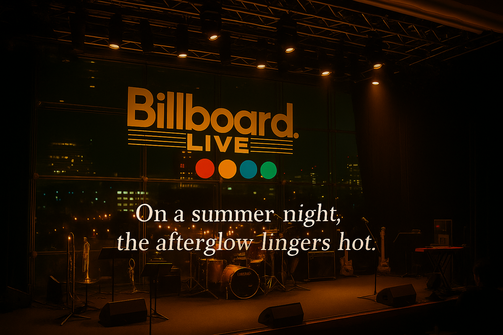

Billboard Live Tokyo — 19 Aug 2007 EN / 日本語
This is an independent fan-made archive, not affiliated with Billboard Live Tokyo or related companies.
本ページはファンによる個人アーカイブであり、Billboard Live Tokyoの企画を応援しています。
Empowered by ChatGPT.
本ページはファンによる個人アーカイブであり、Billboard Live Tokyoの企画を応援しています。
Empowered by ChatGPT.
In late-summer Roppongi, the sky holds a flawless blue. Distant towers stand in quiet command, while the evening breeze and low, easy voices spill into the gathering dusk.
六本木の晩夏、空に青さが澄みわたっている。日暮れとともに、涼風と会話がゆっくり満ちていく。

Instruments waiting under warm downlights, holding a quiet charge before hearts ascend.
温かなダウンライトの下で待つ楽器たち。心が高ぶる瞬間を静かに待ち受ける。

The resonance lingers, mingling with the warmth of a summer night, as if the music itself is reluctant to leave.
響きは夏の夜の温もりと混じり合い、まるで音楽そのものが去りがたく留まっているかのよう。
Notes
- Format legend: [360RA] = 360 Reality Audio / [UHD] = Ultra HD Stereo
Credits
- Photography: Shoichi Sato
- Curation & Notes: Shoichi Sato ・ Hacchi
- Venue: Billboard Live Tokyo
- Year: 2007 (reconstructed in 2025)
As an Amazon Associate I earn from qualifying purchases.
当サイトはAmazonアソシエイト・プログラムの参加者です。適格販売により収入を得る場合があります。
当サイトはAmazonアソシエイト・プログラムの参加者です。適格販売により収入を得る場合があります。